加载更复杂的模型（Loading more complex models）
在本章中，我们将学习加载在外部文件中定义的更复杂的模型。这些模型将由3D建模工具(例如Blender)创建。目前，我们是徒手创建模型，直接写代码定义它们的几何数组。在本章中，我们将学习如何以OBJ格式定义的模型。
OBJ(或者.obj)是Wavefront Technologies开发的一种几何定义开放文件格式，现已被广泛使用。OBJ文件储存构成3D模型的顶点、纹理坐标和多边形。这是一种相对简单的格式，因为它是基于文本格式的，每一行定义了一个元素(顶点、纹理坐标等)。
在.obj文件中，每行从一个标识符开始，标识元素的类型：
- 以"#"开始的行是注释。
- 以"v"开始的行用坐标(x, y, z, w)定义一个几何顶点。例如：
v 0.155 0.211 0.32 1.0。 - 以"vn"开始的行是用坐标(x, y, z)定义顶点法线(
Vertex normals)。例如：vn 0.71 0.21 0.82。之后再讨论这个东西。 - 以"vt"开始的行定义纹理坐标。例如：
vt 0.500 1。 - 以"f"开始的行定义了一个面。利用该行中的信息可以创建索引数组。我们将只处理面是三角形的情况。它可以有几种定义方式：
- 它可以定义顶点位置(f v1 v2 v3)。例如：
f 6 3 1。在这种情况下，这个三角形是由位置为6、3和1的几何顶点定义的(顶点索引总是从1开始)。 - 它可以定义顶点位置、纹理坐标和法线(f v1/t1/n1 v2/t2/n2 v3/t3/n3)。例如：
f 6/4/1 3/5/3 7/6/5。第一部分的v1/t1/n1分别定义了坐标、纹理坐标和顶点法线。看到这个部分可以想到：选择几何顶点6、纹理坐标4和顶点法线1。
- 它可以定义顶点位置(f v1 v2 v3)。例如：
OBJ格式有更多的元素类型(如一对多多边形、定义材质等)。现在我们仅实现如上所述，我们的OBJ加载器将忽略其他元素类型。
但是什么是法线呢？让我们先定义它。当你有一个平面时，它的法线是垂直于该平面的向量，其长度等于1。

正如你在上图中看到的，一个平面可以有两个法线，我们应该用哪一个呢？三维图形中的法线被用于光照，所以我们应该选择面向光源的法线。换句话说，我们应该选择指向模型外部的法线。
我们有一个有多边形、三角形组成的3D模型。每个三角形由三个顶点组成，三角形的法线向量是垂直于三角形表面的向量，其长度等于1。
顶点法线与特定顶点相关联，并且是周围三角形的法线的组合(当然它的长度等于1)。在这里你可以看到一个3D网格的顶点模型(取自维基百科)
{kind=link}

法线将会被用于光照。
让我们开始创建OBJ加载器。首先，我们将修改Mesh类，因为现在必须使用纹理。我们可能加载一些没有定义纹理坐标的OBJ文件，我们必须能够使用颜色而不是纹理渲染它们。这种情况下，面的定义就是这样的：f v/n。
Mesh类现在有一个名为colour的新属性。
private Vector3f colour;
并且构造函数不再需要Texture。取而代之的是，我们将为纹理和颜色属性提供get和set方法。
public Mesh(float[] positions, float[] textCoords, float[] normals, int[] indices) {
当然，在render和clear方法中，在使用纹理之前，必须检查纹理是否为null。正如你在构造函数中看到的，现在需要一个名为normals的浮点数组。如何使用法线渲染？答案很简单，它将只是VAO里的另一个VBO，所以我们需要添加如下代码。
// Vertex normals VBO
vboId = glGenBuffers();
vboIdList.add(vboId);
vecNormalsBuffer = MemoryUtil.memAllocFloat(normals.length);
vecNormalsBuffer.put(normals).flip();
glBindBuffer(GL_ARRAY_BUFFER, vboId);
glBufferData(GL_ARRAY_BUFFER, vecNormalsBuffer, GL_STATIC_DRAW);
glVertexAttribPointer(2, 3, GL_FLOAT, false, 0, 0);
在render方法中，我们必须启用这个VBO并在之后禁用它。
// Draw the mesh
glBindVertexArray(getVaoId());
glEnableVertexAttribArray(0);
glEnableVertexAttribArray(1);
glEnableVertexAttribArray(2);
glDrawElements(GL_TRIANGLES, getVertexCount(), GL_UNSIGNED_INT, 0);
// Restore state
glDisableVertexAttribArray(0);
glDisableVertexAttribArray(1);
glDisableVertexAttribArray(2);
glBindVertexArray(0);
glBindTexture(GL_TEXTURE_2D, 0);
现在已经完成了Mesh类的修改，我们可以修改代码来使用纹理坐标或固定的颜色。因此，我们需要修改片元着色器，像这样：
#version 330
in vec2 outTexCoord;
out vec4 fragColor;
uniform sampler2D texture_sampler;
uniform vec3 colour;
uniform int useColour;
void main()
{
if ( useColour == 1 )
{
fragColor = vec4(colour, 1);
}
else
{
fragColor = texture(texture_sampler, outTexCoord);
}
}
正如你所看到的，我们已经创建了两个新Uniform：
colour: 将储存基础颜色。useColour: 这是个标记，当你不想使用纹理时，它将被设置为1。
在Renderer类中，我们需要创建这两个Uniform。
// Create uniform for default colour and the flag that controls it
shaderProgram.createUniform("colour");
shaderProgram.createUniform("useColour");
和其他Uniform一样，在Renderer类的render方法中，我们也需要为每个GameItem设置这些Uniform的值。
for(GameItem gameItem : gameItems) {
Mesh mesh = gameItem.getMesh();
// Set model view matrix for this item
Matrix4f modelViewMatrix = transformation.getModelViewMatrix(gameItem, viewMatrix);
shaderProgram.setUniform("modelViewMatrix", modelViewMatrix);
// Render the mes for this game item
shaderProgram.setUniform("colour", mesh.getColour());
shaderProgram.setUniform("useColour", mesh.isTextured() ? 0 : 1);
mesh.render();
}
我们可以创建一个名为OBJLoader的新类，它将解析OBJ文件，并用其中的数据创建一个Mesh实例。你可能会在网上发现一些其他实现可能比这更有效，但我认为这个方案更容易理解。这是一个工具类，他将有一个静态方法：
public static Mesh loadMesh(String fileName) throws Exception {
参数fileName是指定文件的名称，该文件必须包含在OBJ模型的类路径中。
我们在该方法中做的第一件事是读取文件内容并存储数组中的所有行。然后创建几个列表来保存顶点、纹理坐标、法线和面。
List<String> lines = Utils.readAllLines(fileName);
List<Vector3f> vertices = new ArrayList<>();
List<Vector2f> textures = new ArrayList<>();
List<Vector3f> normals = new ArrayList<>();
List<Face> faces = new ArrayList<>();
然后解析每一行，并根据起始标识符得到顶点位置、纹理坐标、顶点法线或面定义。最后重新整理这些数据。
for (String line : lines) {
String[] tokens = line.split("\\s+");
switch (tokens[0]) {
case "v":
// Geometric vertex
Vector3f vec3f = new Vector3f(
Float.parseFloat(tokens[1]),
Float.parseFloat(tokens[2]),
Float.parseFloat(tokens[3]));
vertices.add(vec3f);
break;
case "vt":
// Texture coordinate
Vector2f vec2f = new Vector2f(
Float.parseFloat(tokens[1]),
Float.parseFloat(tokens[2]));
textures.add(vec2f);
break;
case "vn":
// Vertex normal
Vector3f vec3fNorm = new Vector3f(
Float.parseFloat(tokens[1]),
Float.parseFloat(tokens[2]),
Float.parseFloat(tokens[3]));
normals.add(vec3fNorm);
break;
case "f":
Face face = new Face(tokens[1], tokens[2], tokens[3]);
faces.add(face);
break;
default:
// Ignore other lines
break;
}
}
return reorderLists(vertices, textures, normals, faces);
在重新排序之前，让我们看看如何解析面的定义。我们创建了一个名为Face的类，它负责解析一个面的定义。一个Face是由索引组列表组成的，现在，因为我们正在处理三角形，所以我们将有三个索引组。
我们将创建另一个名为IndexGroup的内部类，它将为索引组保存数据。
protected static class IdxGroup {
public static final int NO_VALUE = -1;
public int idxPos;
public int idxTextCoord;
public int idxVecNormal;
public IdxGroup() {
idxPos = NO_VALUE;
idxTextCoord = NO_VALUE;
idxVecNormal = NO_VALUE;
}
}
Face类看起来像这样。
protected static class Face {
/**
* List of idxGroup groups for a face triangle (3 vertices per face).
*/
private IdxGroup[] idxGroups = new IdxGroup[3];
public Face(String v1, String v2, String v3) {
idxGroups = new IdxGroup[3];
// Parse the lines
idxGroups[0] = parseLine(v1);
idxGroups[1] = parseLine(v2);
idxGroups[2] = parseLine(v3);
}
private IdxGroup parseLine(String line) {
IdxGroup idxGroup = new IdxGroup();
String[] lineTokens = line.split("/");
int length = lineTokens.length;
idxGroup.idxPos = Integer.parseInt(lineTokens[0]) - 1;
if (length > 1) {
// It can be empty if the obj does not define text coords
String textCoord = lineTokens[1];
idxGroup.idxTextCoord = textCoord.length() > 0 ? Integer.parseInt(textCoord) - 1 : IdxGroup.NO_VALUE;
if (length > 2) {
idxGroup.idxVecNormal = Integer.parseInt(lineTokens[2]) - 1;
}
}
return idxGroup;
}
public IdxGroup[] getFaceVertexIndices() {
return idxGroups;
}
}
当解析面时，我们可以看到没有纹理但具有矢量法线的对象，在这种情况下，面定义可能像f 11//1 17//1 13//1这样，所以我们需要检测这些情况。
最后，我们需要重新整理这些数据。Mesh类需要四个数组，分别用于位置坐标、纹理坐标、法线矢量，一个用于索引。前三个数组应该具有相同数量的元素，因为索引数组是唯一的(注意，相同数量的元素并不意味着相同的长度。顶点坐标是三维的，由三个浮点数组成。纹理坐标是二维的，由两个浮点数组成)。OpenGL不允许我们对每个元素类型定义不同的索引数组(如果可以的话，我们就不需要在应用纹理时重复顶点)。
当你打开一个OBJ文件时，你首先可能会看到保存顶点坐标的列表比保存纹理坐标的列表和顶点的数量要多。这是我们需要解决的问题。举一个简单的例子，定义了一个具有纹理高度的正方形(只是为了说明例子)，其OBJ文件可能是这样的(不要太关注法线坐标，因为它只是为了说明例子)。
v 0 0 0
v 1 0 0
v 1 1 0
v 0 1 0
vt 0 1
vt 1 1
vn 0 0 1
f 1/2/1 2/1/1 3/2/1
f 1/2/1 3/2/1 4/1/1
当我们完成文件解析时，可以看到以下列表(每个元素的数字是它在文件中的位置顺序)：
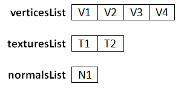
现在我们将使用面定义来创建包括索引在内的最终数组。要考虑的是，纹理坐标与法线向量的定义顺序与顶点的定义顺序不一样。如果列表的大小是相同的，并且它们是有序的，那么面定义就只需要一个顶点用一个数字。
因此，我们需要排列数据，并根据我们的需要进行设置。必须要做的第一件事是创建三个数组和一个列表，分别用于顶点、纹理坐标、法线向量和索引列表。正如我们之前所说的，三个数组将拥有相同数量的元素(等于顶点的数量)。顶点数组将有一个顶点列表的副本。
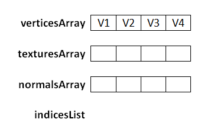
现在我们开始处理面。第一个面的第一个索引组是1/2/1。看到索引组中的第一个索引，即定义几何顶点来构造索引列表的所以，我们把它命名为posIndex。
面指定我们应该把占据第一个位置的元素的索引添加到索引列表中。因此，我们将posIndex减去1后放到indicesList中(我们必须减去1，因为数组的起始是0，而OBJ文件格式中是1)。
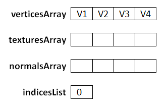
然后，我们使用索引组的其他索引来设置texturesArray和normalsArray。索引组的第二个索引是2，所谓我们必须将第二个纹理坐标放在与顶点指定的posIndex位置(V1)相同的位置上。
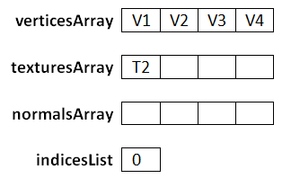
然后我们选择第三个索引，它是1，所以我们要做的是将第一个法线向量坐标放在与顶点指定的posIndex位置(V1)相同的位置上。
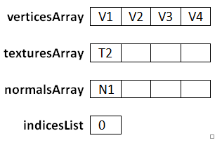
在我们处理了第一个面之后，数组和列表看起来就会像这样。
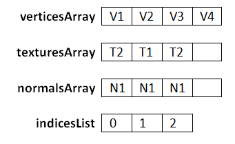
在我们处理了第二个面之后，数组和列表看起来就会像这样。
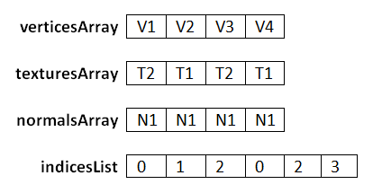
第二个面也定义了已经被赋值的顶点，但是它们有相同的值，所以处理这个问题上很简单。我觉得这个过程已经讲解得很清晰了，不过在你实现它之前可能会有些麻烦。下面是重新排列数据的方法。请记住，我们要得到的是浮点数组，所以必须把顶点、纹理和法线的数组转换成浮点数组。因此，顶点和法线数组的大小将是顶点列表的大小乘以三，而纹理坐标数组的大小应该是顶点列表的大小乘以二。
private static Mesh reorderLists(List<Vector3f> posList, List<Vector2f> textCoordList,
List<Vector3f> normList, List<Face> facesList) {
List<Integer> indices = new ArrayList();
// Create position array in the order it has been declared
float[] posArr = new float[posList.size() * 3];
int i = 0;
for (Vector3f pos : posList) {
posArr[i * 3] = pos.x;
posArr[i * 3 + 1] = pos.y;
posArr[i * 3 + 2] = pos.z;
i++;
}
float[] textCoordArr = new float[posList.size() * 2];
float[] normArr = new float[posList.size() * 3];
for (Face face : facesList) {
IdxGroup[] faceVertexIndices = face.getFaceVertexIndices();
for (IdxGroup indValue : faceVertexIndices) {
processFaceVertex(indValue, textCoordList, normList,
indices, textCoordArr, normArr);
}
}
int[] indicesArr = new int[indices.size()];
indicesArr = indices.stream().mapToInt((Integer v) -> v).toArray();
Mesh mesh = new Mesh(posArr, textCoordArr, normArr, indicesArr);
return mesh;
}
private static void processFaceVertex(IdxGroup indices, List<Vector2f> textCoordList,
List<Vector3f> normList, List<Integer> indicesList,
float[] texCoordArr, float[] normArr) {
// Set index for vertex coordinates
int posIndex = indices.idxPos;
indicesList.add(posIndex);
// Reorder texture coordinates
if (indices.idxTextCoord >= 0) {
Vector2f textCoord = textCoordList.get(indices.idxTextCoord);
texCoordArr[posIndex * 2] = textCoord.x;
texCoordArr[posIndex * 2 + 1] = 1 - textCoord.y;
}
if (indices.idxVecNormal >= 0) {
// Reorder vectornormals
Vector3f vecNorm = normList.get(indices.idxVecNormal);
normArr[posIndex * 3] = vecNorm.x;
normArr[posIndex * 3 + 1] = vecNorm.y;
normArr[posIndex * 3 + 2] = vecNorm.z;
}
}
另一件值得注意的是纹理坐标是UV格式，所以Y坐标需要将文件中取到的值减去一。
最后，我们可以渲染OBJ模型。我已经准备了一个OBJ文件，其中是前面章节中使用过的具有纹理的立方体。为了在DummyGame类的init方法中使用它，我们需要创建一个GameItem实例。
Texture texture = new Texture("/textures/grassblock.png");
mesh.setTexture(texture);
GameItem gameItem = new GameItem(mesh);
gameItem.setScale(0.5f);
gameItem.setPosition(0, 0, -2);
gameItems = new GameItem[]{gameItem};
然后将会得到一个熟悉的有纹理的立方体。
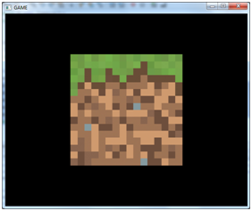
我们可以尝试渲染其他模型。例如可以使用著名的Standford Bunny模型(它可以自由地下载)，将它放在resources文件夹。这个模型没有纹理，所以我们可以这样做：
Mesh mesh = OBJLoader.loadMesh("/models/bunny.obj");
GameItem gameItem = new GameItem(mesh);
gameItem.setScale(1.5f);
gameItem.setPosition(0, 0, -2);
gameItems = new GameItem[]{gameItem};
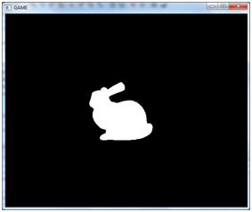
这个模型看起来有点奇怪，因为没有纹理也没有光，所以我们不能看到它的体积，但是你可以检查模型是否正确地加载。在Window类中，设置OpenGL参数时，添加这一行代码。
glPolygonMode( GL_FRONT_AND_BACK, GL_LINE );
当你放大的时候，你会看到类似的东西。
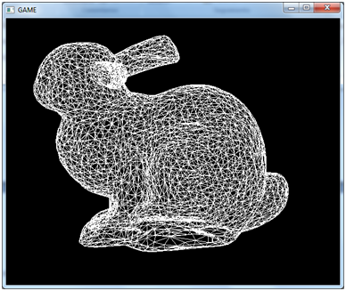
现在你可以看到组成模型的所有三角形了。
使用OBJ载入类，就可以使用Blender创建模型了。Blender是一个强大的工具，但刚开始使用它有点困难，它有很多选项，很多组合，在第一次使用它的时候你需要做很多基本的事情。当你使用Blender导出模型时，请务必将法线和面输出为三角形。
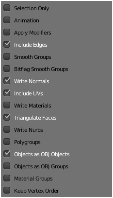
还要记得在导出时切割边，因为我们不能给同一个顶点配方几个纹理坐标。此外，我们需要为每个三角形定义法线，而不是顶点。如果你遇到了光照问题(下一章)，在使用模型时，你应该验证一下法线。你可以在Blender中看到法线。
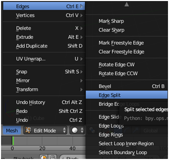